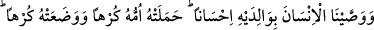
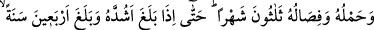
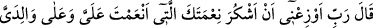
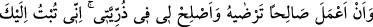
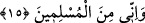

“câhile öğrenmediği için bir azap, âlime amel etmezse bin azab olsun” denilmiştir.
Peygamberimiz (s.a.) şöyle buyurmaktadır: “Gece kalkıp teheccüd namazı kılmak vs.
gece ibâdetleri bana farzdır, size farz değildir.” Burada Peygamberimiz (s.a.)’in
ekmeliyeti ve derecelerinin yüksekliği sebebiyle tâatte bir ağırlaştırma yapılmıştır.
Artık insan kulluk yapmalı ve bunda müstakîm olmalıdır.
Pîr Ebû Ali Seyyâde (k.s.) şöyle dedi: “Eğer sana cenneti mi istersin iki rekât namazı
mı? diye sorarlarsa dikkat et cenneti değil, iki rekat namazı tercih et. Çünkü cennet
senin nasibindir, oysa namaz Allah’ın (c.c) hakkıdır. Her nerede senin nasibin ortaya
çıksa, kerâmet dahi olsa bunun hile ve tuzak olması muhtemeldir. Oysa Hakk’ın isteğini
yerine getirmede hile ve zorluk yoktur. Hz. Mûsâ (a.s.) Hızır (a.s.)’ın yanına geldiğinde
biri çocuk, diğeri geminin delinmesi konusunda ona iki defa itiraz etti. Bu iki itirazda
Mûsâ (a.s)’a âid bir nasip meydana gelmediği için Hızır (a.s.) buna sabretti. Fakat
üçüncü itirazda Mûsâ (a.s.)’a âid bir nasip nefsinden meydana gelince Hızır (a.s.);
“artık seninle aramda arkadaşlık kalmadı” dedi. Nefsî isteklerin ve dünya
güzelliklerinden hiçbir şeyin ibâdetine karışmaması konusunda dikkatli ol.
Abdâllardan bir topluluk havada uçuyorlardı. Yolları yeşil, güzel bir bahçeye düştü.
Orada suyu temiz bir çeşme de vardı. Onlardan bir tanesinin içinden bu çeşmeden
abdest alarak bahçede namaz kılma isteği geçti. O anda bu kimse bu topluluğun
arasından yere düştü ve diğerleri onu terk edip gittiler. O kimse bu isteği miktarınca
kendi mertebesinden geri kaldı. Bil ki bu durum, oldukça ince mânâlı ve gayet acîp bir
sırdır. Eğer anlarsan, Hak Teâlâ bu hikâye ile sana öğüt vermektedir.
İşte kulluk, tedbiri terk edip takdiri müşahede etmektedir. Bu âyetle ilgili diğer
izahâtlar secde âyetinin bulunduğu “Hâ Mîm” de yâni Fussilet sûresi 30. âyette
geçmiştir. Allah Teâlâ’dan bizleri istikâmet erbâbından ve ikâmet yurdu olan cennet
sahiplerinden kılmasını diliyoruz. Çünkü O, hem dünyada, hem de âhirette lütuf, kerem
ve ihsan sahibidir.
15. Biz insana, ana-babasına iyilik etmesini tavsiye ettik. Annesi onu zahmetle
taşıdı ve zahmetle doğurdu. Taşınması ile sütten kesilmesi, otuz ay sürer. Nihayet
insan, güçlü çağına erip kırk yaşına varınca der ki: Rabbim! Bana ve ana-babama
verdiğin nimete şükretmemi ve razı olacağın yararlı iş yapmamı temin et. Benim